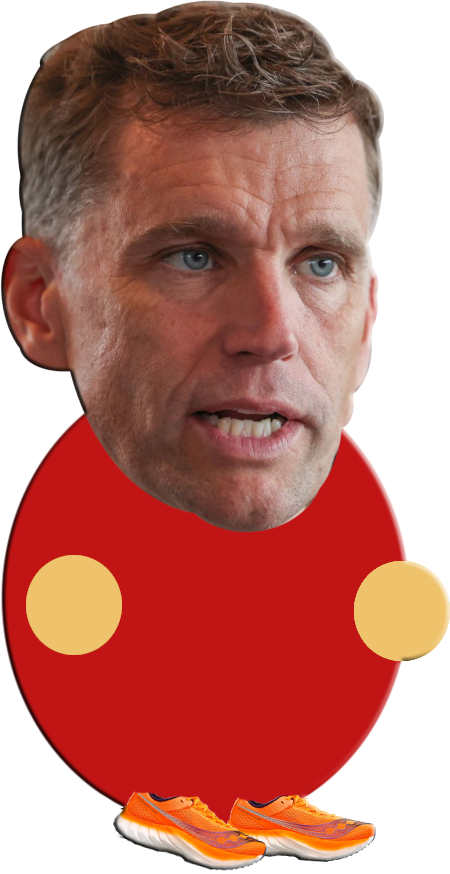
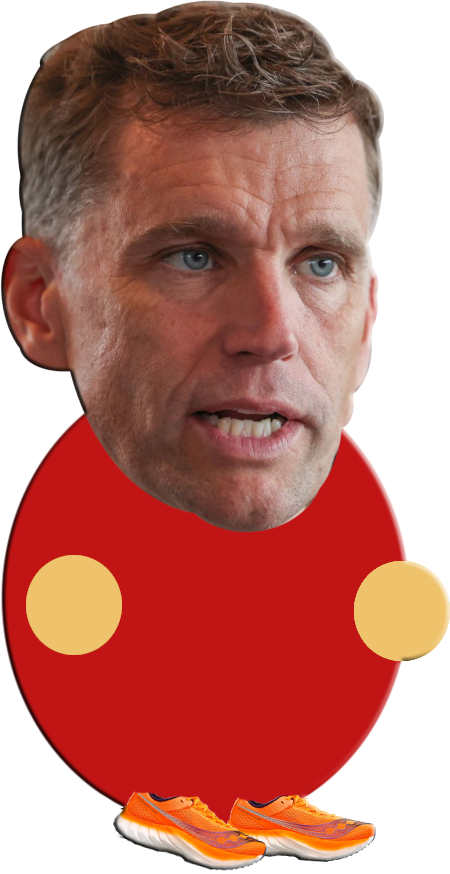

Nouveau tracé
LE jeu

Salut! Je suis Gilles Lehouiller, maire actuel de Lévis et amateur de voirie. STP, aide-moi à définir le nouveau tracé du troisième lien. C'est simple, tu n'as qu'à appuyer sur les tuiles de pont enjambant le fleuve afin de joindre les deux rives.
COMMENCER